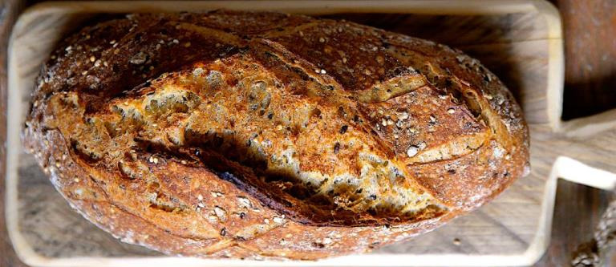

Хлеб с отрубями

Смешать 1,5 ст. муки, 0,5 ст. отрубей, 2/3 ч.л. соды, 2/3 ч.л. соли, 1 ч.л. сахара. Добавить в получившуюся смесь 1 ст. кефира, 3 ст.л. растительного масла, замесить тесто (оно будет некрутым, но к рукам не будет липнуть, такое, рыхловатое). По желанию орехи/сухофрукты.
Оставить буквально на 15 минут. Сформировать 2 батончика. А затем в духовку на 200 градусов до готовности (минут 30).